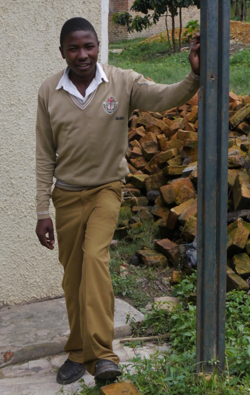
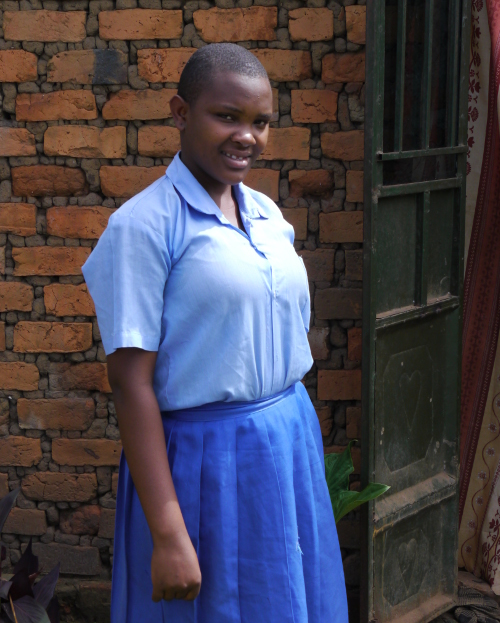
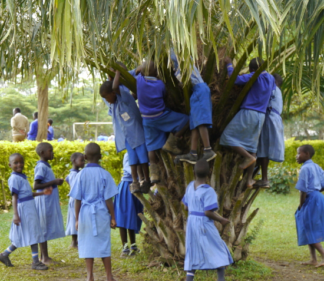

April 2014
Bram Moolenaar, penningmeester van ICCF Holland, bezocht het Kibaale
Children's Centre in april 2014. Dit is zijn verslag.
Veel meer foto's zijn te vinden op
Google+.
Een korte video is te vinden op
Youtube
Er is ook een
print versie van het verslag
Aankomst
Op zaterdagavond land ik in Entebbe. De formaliteiten zijn snel afgehandeld en
mijn bagage komt vlot. Nu eerst Ugandees geld regelen. Ik ben positief verrast
als de eerste geldautomaat die ik probeer ook werkt. Vorige trips was dat nog
lastig, slechts een op drie automaten werkte. Een teken dat de infrastructuur
in Uganda beter wordt.
Volgende taak is om een SIM kaart te kopen, zodat ik de internet apparatuur die
ik heb meegenomen kan gebruiken. Helaas is het kantoortje van Airtel op het
vliegveld gesloten, en dat is de enige provider die in Kibaale werkt. De
chauffeur van het hotel staat klaar om me op te halen. Hij stelt voor om het
in het dorp te proberen. We rijden naar Entebbe en stoppen bij een straat
stalletje. Het staat vol met goedkope elektronica en telefoons. De verkoper
heeft een Airtel SIM en kan me ook de kraskaart verkopen om een internet bundel
te kopen. Prima, en hij kan het vlot activeren op mijn telefoon. Maar dan
werkt internet niet en de man weet het verder ook niet. Gelukkig had ik op de
Airtel website de APN naam gezien. Als ik die in mijn telefoon zet blijkt het
te werken. Een goed begin! Ik blijf deze nacht in een eenvoudig hotel in
Entebbe.
|
|
|

Lagere school jongens eten lunch
|

mais meel voor gezinnen die niet genoeg eten hebben
|
|
|
Naar Kibaale
Zondag komt de chauffeur me ophalen. Hij is een beetje laat, het heeft flink
geregend en de weg die hij nam is glibberig. Eerst gaan we naar Nakumatt, een
nieuwe supermarkt in Entebbe. Onderdeel van een nieuw winkelcentrum, er wordt
nog volop gebouwd. Ook weer een teken dat het steeds beter gaat in Uganda. De
beveiliging is strikt, onze auto wordt geïnspecteerd. Ze hebben een groot
assortiment, maar het is wel zoeken. Ik koop wat ik denk nodig te hebben voor
de dagen dat in Kibaale ben.
De reis gaat eerst naar Masaka. Onderweg zien we veel verkeerspolitie. De
chauffeur legt uit dat het bijna Pasen is en de politie probeert wat "bij te
verdienen". Hopelijk verbetert het ook de verkeersveiligheid. De weg is hier
en daar opgebroken. Er wordt al een aantal jaren aan gewerkt. Als we dichter
bij Masaka komen rijden we op de mooie nieuwe weg.
In Masaka staat Jeff, de field director, me al op te wachten, we gaan gelijk
door naar Kibaale. Het laatste stuk gaat over onverharde weg, maar het is goed
te doen. Ik voel me al weer thuis, herken veel stukken van de weg. Alleen
zitten de gaten nu ergens anders.
In Kibaale ziet het er vertrouwd uit. Het is regenseizoen, alles is groen. Ik
verblijf in een kamer bij het "guesthouse", ik heb daar al eerder geslapen.
Prima verzorgd, er is zelfs stromend water. Maar de geiser doet het niet, dus
geen warme douche. Ik gebruik de eerste avond om het internet uit te proberen.
Het werkt, maar is erg langzaam. Net genoeg om mijn email te lezen.
|
Maandag
De dag begint met een flinke regenbui. Goed voor de boeren, maar verder niet
zo handig. De generator gaat pas aan na negen uur, als de kliniek en de
kantoren stroom nodig hebben. Tot die tijd is het vrij donker in huis.
Ik ontmoet Christopher, hij is mijn contact voor de oudere kinderen. Deze
zitten op een school buiten het project of gaan naar de universiteit. Elk kind
doet iets anders, dus dat is heel veel werk om te regelen. We gaan door de
lijst met gesponsorde
kinderen. Gelukkig is het grotendeels in orde. Ik noteer details van elk
kind, zodat ik weet waar ze nu zijn. Als ik Christopher vraag hoe het met elk
kind gaat is het antwoord steeds "doing well" of "OK". Dus geen probleem
gevallen, en dat is heel goed.
Drie kinderen hebben de middelbare school afgemaakt en hebben net de examen
resultaten binnen. Ze moeten nu kiezen wat ze willen gaan studeren. Alle drie
hebben ze voldoende resultaten om een beroepsopleiding te gaan doen. Ik zal de
sponsors moeten vragen of ze dit willen betalen. Dat is een flink bedrag, rond
100 euro per maand. Lukt dat niet dan moeten we iets zien te regelen. Ik zou
niet willen dat deze kinderen hun opleiding niet af kunnen maken.
Dominique komt langs om naar de geiser te kijken. Hij weet het snel op te
lossen: de batterijen waren bijna leeg. Ik ben blij dat ik kan genieten van
een warme douche in Kibaale. Dat is niet vanzelfsprekend! Hij kijkt ook naar
een lek in de afvoer, maar het lukt niet om dat te repareren, de vloer blijft
nat.
Dominique laat me ook de generator zien, die is nu ruim een jaar oud. Het
zonne-energie systeem is helaas kapot. De accu's zijn oud en moeten vervangen
worden. De inverter is kapot en moet worden gerepareerd of vervangen. Dit is
duur, de vraag is of dat een goede investering is. Er zijn elektriciteits
leidingen in Kibaale, maar die zijn nog niet aangesloten. De vraag is wanneer
dat gebeurd, niemand weet het. Mogelijk pas over twee jaar, als de verkiezings
campagne begint en de politici graag cadeautjes uitdelen om stemmen te winnen.
Ik bezoek de kliniek. Het is (gelukkig) niet zo druk. Het ziet er
georganiseerd uit. Twee kinderen krijgen een infuus, ze hebben malaria en op
deze manier sterken ze aan. De lab technicus laat me zijn werkplek zien. Het
is aan een opknapbeurt toe en hij zou graag meer testen kunnen doen. We moeten
nog veel patiënten doorsturen naar Rakai of Masaka, en dat is een zware trip
voor iemand die ziek is.
's Middags praat ik met Mugabi, hij is mijn contact voor de jongere kinderen.
Net als met Christopher loop ik door de lijst met gesponsorde kinderen. Een
klein aantal moet een klas over doen. Het leuke is dat Mugabi elk kind in de
computer opzoekt, terwijl Rose het uit haar hoofd doet. Rose is sneller, maar
zit er zo nu en dan naast. Niet verwonderlijk dat ze niet van alle 600
kinderen weet in welke klas ze zitten! Ze is wel degene die van bijna elk kind
de achtergrond weet, de familie kent en welke kinderen broer en zus zijn.
|
|
|

Een kind in de kliniek aan een infuus
|

Denis doet dit jaar examen
|
|
|
Dinsdag
De dag begint weer met regen. Christopher brengt me twee USB sticks, of ik die
kan unlocken. Een blijkt vrij makkelijk te zijn, ik moet alleen de unlock code
zien te vinden. De andere is een uitdaging. Nieuwe firmware installeren
blijkt niet te werken. Na wat zoeken op het langzame internet vind ik
instructies voor een oplossing. Dan moet ik wel een bestand downloaden van 7
Mbyte. En dat mislukt meerdere keren. Pas aan het eind van de dag lukt het.
Nu heb ik vier USB sticks om uit te proberen. Ik gebruik een Asus 3G basis
station, geplaatst bij het raam blijkt dat goed te werken. Maar het heeft wel
stroom nodig, dus het werkt alleen als de generator draait.
Ik bezoek Sylivia thuis, ze wordt gesponsord door mijn ouders. Hun huis is
goed, alhoewel het aan de achterkant niet af blijkt te zijn. Het is een groot
gezin, er wonen negen kinderen, zeven meisjes en twee jongens. De vader is
thuis, het is de eerste keer dat ik hem ontmoet. Hij is ziek. Hij heeft een
nier operatie gehad en moet binnenkort nog een keer geopereerd worden. Ik wens
hem sterkte. Sylivia zit in P6, de zesde klas van de lagere school. Haar
lerares is Annet. Ze wil later verpleegster worden.
Denis is de volgende die ik thuis opzoek. Hij wordt al jaren gesponsord door
mijn voormalige buren. En ik heb hem al meerdere keren bezocht. Het is
interessant om te zien hoe hij gegroeid is. Hij blijkt nu bij zijn oom te
wonen, zijn zus en broers wonen nog in het huis ernaast. Helaas kan hij de
sleutel niet vinden, dus we praten buiten. Denis is nu in S4, de laatste klas
van de middelbare school. Hij zal dit jaar examen doen. De komende weken is
het vakantie, maar hij zal toch naar school gaan om te leren. Het is een
belangrijk jaar voor Denis. Hij is goed in scheikunde, hij wil later leraar
worden. Denis is gek op voetbal, dus ik heb een bal voor hem meegenomen. Zijn
oom heeft een goede baan en ze hebben zelfs een TV, zodat ze voetbal
wedstrijden kunnen kijken.
Later op de dag zoek ik Rose op. Ze heeft S6 examens gedaan en heeft net de
uitslag binnen. Ze wil social studies gaan doen maar ze heeft zich nog niet
ingeschreven. Tot de school begint werkt ze thuis. De vader heeft elk kind een
stukje grond gegeven, zodat ze leren iets te verbouwen. Rose heeft vooral
bonen, die groeien goed met de regen. Beide ouders zijn er, maar het is een
groot gezin met tien kinderen. Ze kunnen net aan hun kinderen te eten geven,
geld voor school is er niet. Ik geef Rose badminton rackets. Ze kent het
niet, maar met wat uitleg kan ze al snel met haar zusje badmintonnen. Ze
hebben lol.
|
Woensdag
Ik neem een warme douche, maar halverwege houd het water er mee op. Nu moet ik
wachten tot de generator draait, zodat het water van het onderste naar het
bovenste vat gepompt kan worden. Een loodgieter komt langs om de lekkende
afvoer te repareren. Hoe doet goed werk, na een hoop herrie en rommel is het
lek gerepareerd. Geen natte badkamer vloer meer.
I bezoek Patrick in zijn kantoor, een werknemer die al heel lang voor ons
werkt. We praten over diverse zaken, hij is op de hoogte van wat er in Kibaale
en de rest van het land gebeurd. We praten ook over Moureen, een kind wat ik
op wilde zoeken, maar ze is niet thuis. De situatie van haar gezin is niet
goed. De vader heeft het gezin al langer terug in de steek gelaten en nu is de
moeder ook weg. De kinderen moeten zichzelf zien te redden, een grootmoeder
helpt ze zo nu en dan. Moureen zit op een kostschool en ze doet het blijkbaar
goed. In het verleden had ze problemen met andere scholen, ik blij te horen
dat het nu goed gaat, ondanks de problemen thuis.
I zoek Nankya thuis op. De weg naar hun huis is te modderig, we parkeren in
een dorpje en lopen de rest. We ontmoeten de moeder in het dorpje, ze heeft
daar een restaurantje. Nankya is in de laatste klas van de lagere school, ze
zal later dit jaar examen doen. Ze is goed in aardrijkskunde en geschiedenis.
Ze zegt dat ze later dokter wil worden. Nou, dan zal ze nog heel hard moeten
leren! Het huis is van bakstenen, maar is niet af. De muren zijn niet
gepleisterd en de vloer is van zand. Dat is niet schoon te houden. Ik heb een
gift van de sponsor en stel voor die te gebruiken om het huis te verbeteren.
|
|
|

Nankya voor haar huis
|

Kinderen klimmen in een boom om vruchten te zoeken.
|
|
|
Donderdag
Alweer de laatste dag in Kibaale, want vrijdag is het een feestdag. Ik zoek met
mijn USB stick een plek bij het kantoor waar het internet goed werkt. Er is
niet een plek te vinden waar het veel beter is. Ik monteer een basis station
op het raam van het kantoor. Op deze manier kunnen ze met een USB stick in het
hele kantoor internet gebruiken. Maar het blijft langzaam.
Ik praat met Peter, de directeur van het centrum. Hij vertelt over de
voortdurende groei. Er zijn nu ongeveer 143 werknemers, dat is een hele
organisatie. Er is een management commissie die de belangrijke beslissingen
neemt. De school is weer gegroeid, de middelbare school en de kleuterschool
hebben er een klas bijgekregen. Over een paar jaar hebben we op elk niveau
twee klassen.
De school heeft vandaag een speciaal programma. Een bus met voormalige
studenten arriveert. Ze vertellen de scholieren hun verhaal, wat ze gestudeerd
hebben en wat voor baan ze hebben kunnen bemachtigen. Op deze manier krijgen
de kinderen een indruk van de mogelijke opleidingen en worden gemotiveerd om
hun best te doen op school. Het is een heel festijn, er wordt gezongen en
gelachen.
Jeff laat me een nieuw water filter zien. We hebben in het verleden diverse
systemen geprobeerd, zoals SODIS, maar dat is nooit een groot succes geworden.
Dit systeem is eenvoudiger: doe vuil water in een ton en laat het door het
filter eruit lopen, het resultaat is schoon drinkwater. Jeff denkt erover om
dit als kerstcadeau te gebruiken, als de sponsor een extra donatie geeft.
Dan is het alweer voorbij. Ik pak mijn spullen en deel nog wat dingen uit. Ik
neem afscheid van Kibaale en rij met Jeff mee naar Masaka.
|
Tenslotte
Vrijdag ben ik in Masaka, op het Timothy center. Dit is een middelbare school
voor meisjes. De school is vandaag dicht, het is stil op het terrein. Ik
gebruik deze dag om mijn notities bij te werken en email te lezen.
Het Timothy center ligt net buiten Masaka, aan de rand van een moeras. Het is
prachtig aangelegd en er zijn vele vogels. Meest opvallende is een aantal
Ibissen, die gretig eten van de termieten die vandaag allemaal tegelijk
uitvliegen.
Ook hier werkt het internet niet zo goed, maar er is wel een goed signaal. Het
blijkt dat de repeaters niet goed zijn ingesteld. Ik configureer het basis
station opnieuw en plaats enkele repeaters op een goede plek. Dan is er bij
alle huizen een goed signaal. Ik laat de rest van de apparatuur bij Jeff
achter, hij kan dat ook bij de andere kantoren gebruiken.
Het is fijn om mijn reis hier af te sluiten met het gefluit van vogels op de
achtergrond. Uganda is een prachtig land!
|
|
|

Het Timothy center in Masaka
|
Bram Moolenaar
veel meer foto's op Google+.
Een korte video op Youtube
top
|